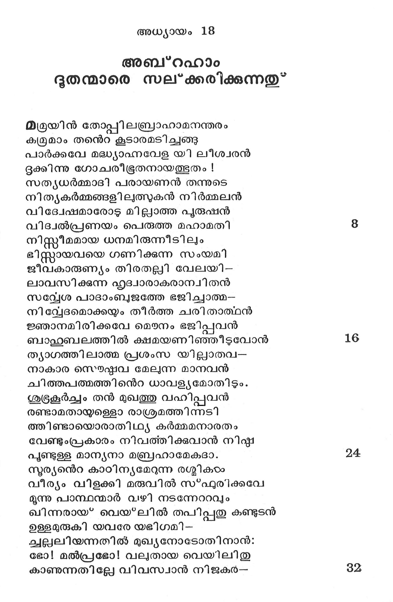
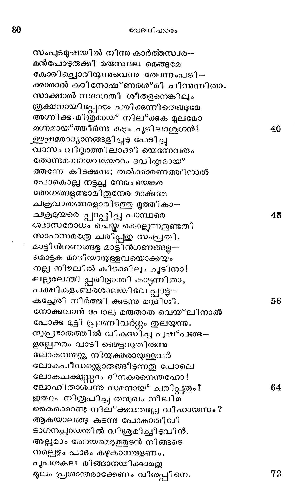
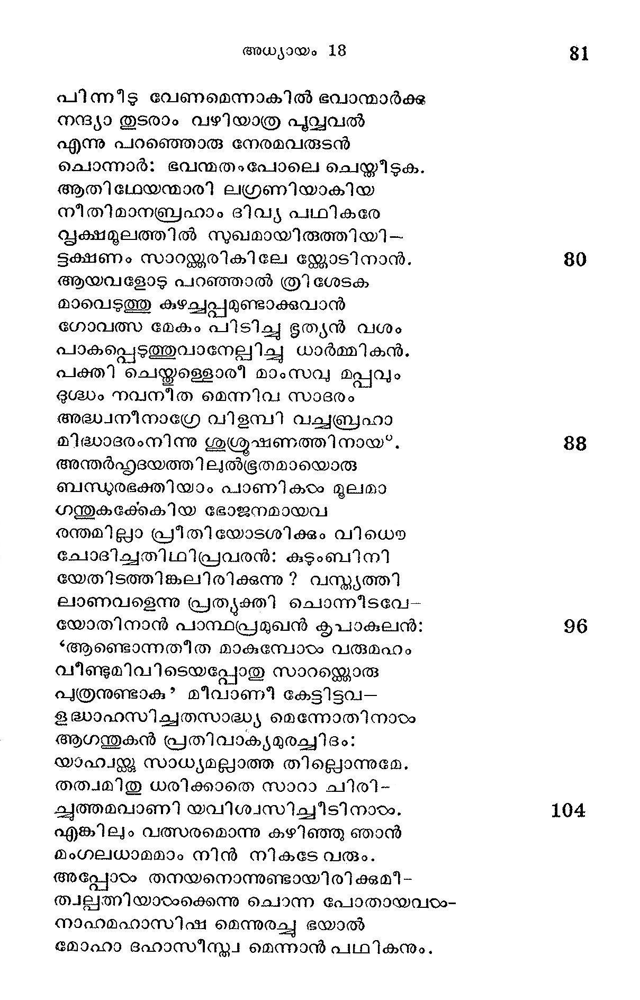
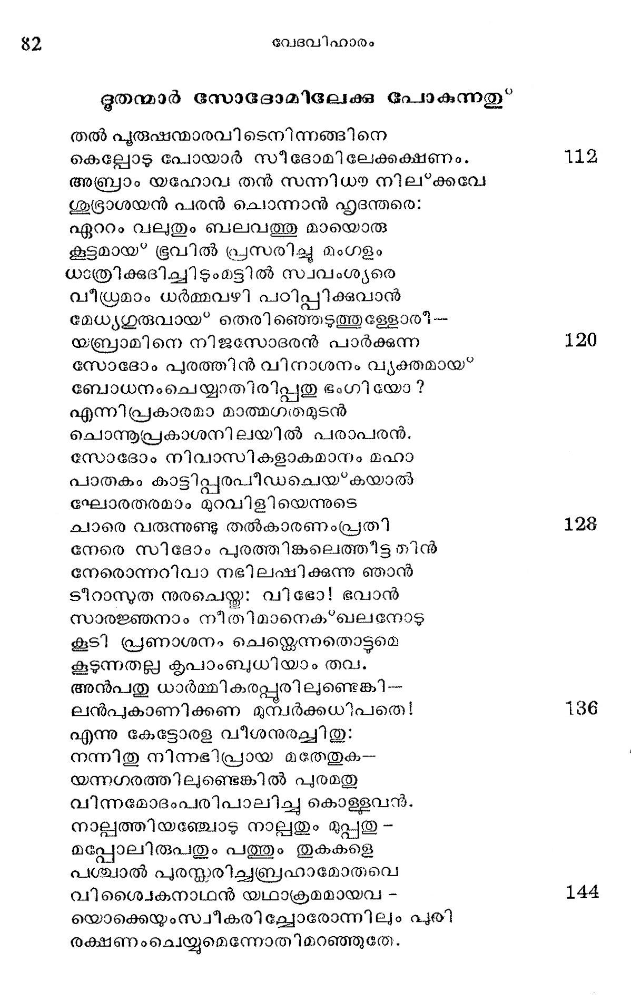

അബ"റഹാം ദൂതന്മാരെ സല്ക്കരിക്കുന്നതു*
മത്രമ്യിന് തോപ്പിലബ്രാഹാമനന്തരം
ക്രമുമാം തന്െറ കൂടാരമടിചങഞ്ങു
പാര്ക്കവേ മദ്ധ്യാഹ്നവേള യി ലീശ്വരന്
ദുക്കിന്നു ഗോചരീഭൂതനായത്ഭുതം !
സത്യധര്മ്മാദി പരായണന് തന്നുടെ
നിതൃകര്മ്മങ്ങളിലുത്തുകന് നിര്മ്മലന്
വിദ്വേഷമാരോട മില്ലാത്ത പുരുഷന്
വിദ്വല്പ്രണയം പെരുത്ത മഹാമതി
നിസ്ത്രീമമായ ധനമിരുന്നീടിലം
ഭിസ്്റായവയെ ഗണിക്കുന്ന സംയമി
ജീവകാരുണ്യം തിരതല്ലി വേലയി--
ലാവസിക്കുന്ന ഹൃദ്വാരാകരാന്വിതന്
സവ്വേശ പാദാംബുജത്തേ ഭജിച്ാത്മ--
നിവ്വേദമൊക്കയും തീര്ത്ത ചരിതാത്ഥന്
ജ്ഞാനമിരിക്കവേ മൌനം ഭജിപ്പവന്
ബാഹുുൂബലത്തില് ക്ഷമയണിഞ്ഞീടുവോന്
തൃയാഗത്തിലാത്മ പ്രശംസ യില്ലാതവ-
നാകാര സൌഭഷ്ഷവ മേലന്ന മാനവന്
ചുിത്തപത്മത്തിന്െറ ധാവള്യമോതിടും.
ശുട്രകൂര്ച്ചം തന് മുഖത്തു വഹിപ്പവന്
രണ്ടാമതായ്ള്ളൊ രാശ്രമത്തിന്നടി
ത്തിണ്ടായൊരാതിഥ്യ കര്മ്മമനാരതം
വേണ്ടുംപ്രകാരം നിവത്തിക്കുവാന് നിഷ്ഠ
പൂണ്ടുള്ള മാന്യനാ മബ്രഹാമേകദാ.
സൂര്യന്െറ കാഠിന്യമേറുന്ന രശ്മികടം
വീര്യം വിളക്കി മരുവില് സ*ഫുരിക്കവേ
മൂന്നു പാസ്ഥന്മാര് വഴി നടന്നേററവും
ഖിന്നരായ* വെയ്*ലില് തപിപ്പതു കണ്ടുടന്
ഉള്ളമുരുകി യവരേ യഭിഗമി -
ചല്ലിയന്നതില് മുഖ്യനോടോതിനാന്:
ഭോ! മല്പ്രഭോ! വലുതായ വെയിലിതു
കാണുന്നതില്ലേ വിവസ്വാന് നിജകര്--

സംപുടമൂഷയില് നിന്നു കാര്ത്തസ്വര--
മന്പോടുരുക്കി മരുസ്ഥല മെങ്ങുമേ
കോരിച്ചൊരിയുന്നുവെന്നു തോന്നുംപടി -
കാരാൽ കഠി നോഷ*ണരശ*മി ചിന്നുന്നിതാ.
സാക്ഷാല് സദാഗതി ശീതളനെങ്കിലും
രൂക്ഷനായിപ്പോടം ചരിക്കുന്നിതെങ്ങുമേ
അഗ്നിക്കു.മിത്രമായ* നിലക്കുക മൂലമോ
മഗ്നമായ്*ത്തിീര്ന്നു കടും ചുടിലാശുഗന് !
കയഷരോദ്യാനങ്ങളിച്ചുട പേടിച്ചു
വാസം വിഭൂരത്തിലാക്കി യെന്നേവരും
തോന്നുമാറായവയേററം ദവിഷ്ടമായ*
തന്നേ കിടക്കുന്നു; തല്ക്കാരണത്തിനാൽ
പോകൊല്ല നട്ടച്ച നേരം ഭയങ്കര
രോഗങ്ങളണ്ടാമിതുനേര മാക്കമേ
ചക്രവാതങ്ങളൊരിടത്തു മൃത്തികാ--
ചക്രമുയരെ പ്പാപ്പിച്ച പാന്ഥരെ
“ശ്വാസരോധം ചെയ്ത കൊല്ലന്നതുണ്ടതി
സാഹസമത്രേ ചരിപ്പതു സംപ്രതി.
കാട്ടിന്ഗണങ്ങളു മാട്ടിന്ഗണങ്ങള--
മൊട്ടക മാദിയായള്ളവയൊക്കയും
നല്ല നിഴലില് കിടക്കിലും ചൂടിനാ!
ഷല്ലലേന്തി പ്പരിഭ്രാന്തി കാട്ടന്നിതാ,
പക്ഷികളംബരശാലയിലേ പ്പാട്ട്-
കല്ലേരി നിര്ത്തി ക്കടന്നു മറുദിശി.
നോക്കുവാന് പോല മരുതാത വെയ*ലിനാല്
പോക്ക മുട്ടി പ്രാണിവര്ഗ്ഗം തുലയുന്നു.
സുപ്രഭാതത്തില് വികസിച്ച പുഷ*പങ്ങ-
ഉല്ലേതരം വാടി ഞെട്ടററുതിരുന്നു
ലോകനന്മന്ക്കു നിയുക്തരായ്ള്ളവര്
-.ലോകപീഡമ്കതൊരുങ്ങീടുന്നതു പോലെ
ലോകചക്ഷുസ്താം ദിനകരനെന്തഹോ!
ലോഹിതാശ്വന്നു സമനായ* ചരിപ്പതും!
ഇത്ഥം നിരൂപിച്ചു തന്മുഖം നീലിമ
കൈക്കൊണ്ടു നില്ക്കുവതല്ലേ വിഹായസം ?
ആകയാലങ്ങു കടന്നു പോകാതിവി
ടാഗനച്ഛായയില് വിശ്രമിച്ചീടുവിന്.
അല്ലമാം തോയമെടുത്തുടന് നിങ്ങടെ
നല്ലെഴും പാദം കഴുകാനരുളണം.,
പുപശകല മിങ്ങാനയിക്കാമതു
മൂലം പ്രശാന്തമാക്കേണം വിശപ്പിനെ.

പിന്നടടു വേണമെന്നാകില് ഭവാന്മാര്ക്ക
നന്ദ്യാ തുടരാം വഴിയാത്ര പുവ്വവല്
എന്നു പറഞ്ഞൊരു നേരമവരുടന്
ചൊന്നാർ: ഭവന്മതംപോലെ ചെയ്തിടുക.
ആതി ഥേയന്മാരി ലഗ്രണിയാകിയ
നീതിമാനബ്രഹാം ദിവ്യ പ്ഥികരേ
വൃക്ഷമൂലത്തില് സുഖമായിരുത്തിയി --
ടക്ഷണം സാറജള്യരികിലേ ല്ലോടിനാന്.
ആയവളോട പറഞ്ഞാല് ത്രി ശേടക
മാവെടുത്തു കുഴച്ചപ്പമുണ്ടാക്കുവാന്
ഗോവത്സ മേകം പിടിച്ചു ഭൂത്യന് വശം
പാകപ്പെടുത്തുവാനേല്പിച്ചു ധാര്മ്മി കന്.
വക്തി ചെയ്തള്ളൊരീ മാംസവു മപ്പവും
ഭുഭ്ധം നവനീത മെന്നിവ സാദരം
അദ്ധ്വനീനാഗ്രേ വിളമ്പി വച്ചബ്രഹാ
മിദ്ധാദരംനിന്നു ശൃശ്രൂഷണത്തിനായ്.
അന്തര്ഹ്കദയത്തില്ല്ഭൂതമായൊരു
ബന്ധുരഭക്തിയാം പാണികംം മൂലമാ
ഗന്തുകക്കേകിയ ഭോജനമായവ
രന്തമില്ലാ പ്രീതിയോടശിക്കും വിധൌ
ചോദിച്ചതിഥിപ്രവരന്: കുടുംബിനി
യേതിടത്തിങ്കലിരിക്കുന്നു ? വസ്ത്ൃത്തി
ലാണവളെന്നു പ്രത്ൃക്തി ചൊന്നീടവേ-
യോതിനാന് പാസ്ഥപ്രമുഖന് കൃപാകുലന്:
*ആങണ്ടൊന്നതീത മാകുമ്പോടം വരുമഹം
വീണ്ടുമിവിടെയപ്പോതു സാറമ്കൊരു
പുത്രനുണ്ടാക? മീവാണി കേട്ടിട്ടവ-
ഭദ്ധാഹസിച്ചതസാദ്ധ്യ മെന്നോതിനാടം
ആഗന്തുകന് പ്രതിവാക്ൃമുരച്ചിദം:
യാഹ്വന്ക്കു സാധ്യമല്ലാത്ത തില്ലൊന്നുമേ.
തത്വമിതു ധരിക്കാതെ സാറാ ചിരി-
ചുത്തമലാണി യവിശ്വസിച്ചീടിനാഠം.
എങ്കിലും വത്സരമൊന്നു കഴിഞ്ഞു ഞാന്
മംഗലധാമമാം നിന് നികടേ വരും.
അപ്പോഠം തനയനൊന്നുണ്ടായിരിക്കുമീ-
ത്വല്ല്തിയാരാക്കെന്നു ചൊന്ന പോതായവരയാ-
നാഹമഹാസിഷ മെന്നുരച്ചു ഭയാല്
മോഹാ ദഹാസീസ്ത്വ മെന്നാന് പഥികനും.

ഭൂതന്മാര് സോടദോമിലേക്കു പോകുന്നതു”
തല് പുരുഷന്മാരവിടെനിന്നങ്ങിനെ
കെല്ലോടു പോയാര് സീദോമിലേക്കക്ഷണം.
അബ്രാം യഹോവ തന് സന്നിധാനില്ക്കവേ
ശുഭരാശയന് പരന് ചൊന്നാൻ ഹൃദന്തരെ:
ഏററം വലുതും ബലവത്തു മായൊരു
കൂട്ടമായ് ഭൂവില് പ്രസരിച്ചു മംഗളം
ധാത്രിക്കുദിച്ചി ഴുംമട്ടില് സ്വവംശ്ൃരെ
വീയ്രമാം ധര്മ്മവഴി പഠിപ്പിക്കുവാന്
മേധ്യഗുരുവായ* തെരിഞ്ചെടുത്തുളേളാര്ി --
യബ്രാമിനെ നിജസോദരന് പാരക്കുന്ന
സോദോം പുരത്തിന് വിനാശനം വ്ൃക്തമായ*”
ബോധനംലചെയ്യാതിരിപ്പതു ഭംഗിയോ?
എന്നിപ്രകാരമാ മാത്മഗതമുടന്
ചൊന്നുപ്രകാശനിലയില് പരാപരന്.
സോദോം നിവാസികളാകമാനം മഹാ
പാതകം കാട്ടിപ്പരപീഡചെയ്കയാല്
ഘോരതരമാം മുറവിളിയെന്നുടെ
ചാരെ വരുന്നുണ്ടു തല്കാരണംപ്പതി
നേരെ സിദോം പുരത്തിങ്കലെത്തീട്ടതിന്
നേരൊന്നറിവാ നഭിലഷിക്കുന്നു ഞാന്
ടീറാസുത നുരചെയ്ത: വിഭോ! ഭവാന്
സാരജ്ഞനാം നീതിമാനെക്ഖലനോടു
കൂടി പ്രണാശനം ചെയ്ലെന്നതൊട്ടുമെ
കൂടുന്നതല്ല കൃപാംബുധിയാം തവ.
അന്പതു ധാര്മ്മികരപ്പൂരി ലുണ്ടെങ്കി-
ലന്പുകാണിക്കണ മുമ്പര്ക്കധിപതെ!
എന്നു കേട്ടോരള വീശനുരച്ചിതു:
നന്നിതു നിന്നഭിപ്രായ മതേതുക--
യന്നഗരത്തിലുണ്ടെങ്കില് പുരമതു
വിന്നമോദംപരിപാലിച്ചു കൊള്ളവന്.
നാല്ലത്തിയഞ്ചോടു നാല്പതും മുപ്പതു -
മപ്പോലിരുപതും പത്തും തുകകളെ
പശ്ചാല് പുരസ്കരിച്ചബ്രഹാമോതവെ
വിശ്വൈകനാഥന് യഥാക്രമമായവ -
യൊക്കെയുംസ്വീകരില്ചോരോന്നിലും പുരി
രക്ഷണംചെയ്യുമെന്നോതിമറഞ്ഞുതേ.
